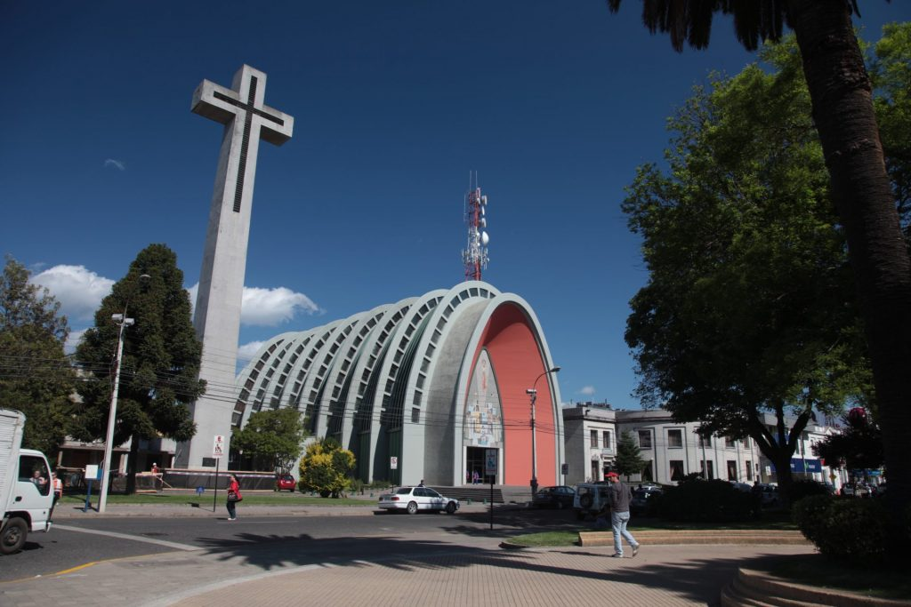
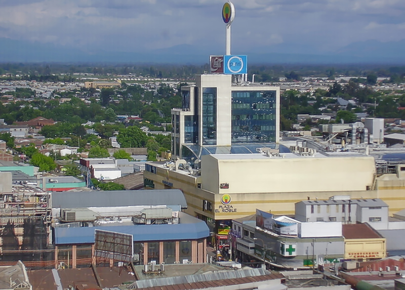
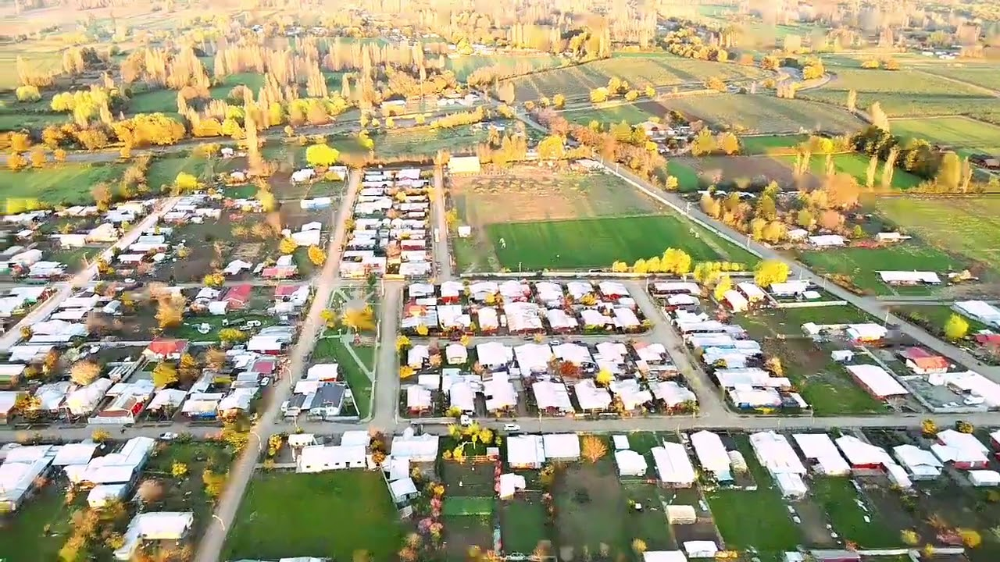

Chillan

Pemuco
pueblito entre pueblos, bastante chistoso
- se hace la fiesta pemucana
- se hace la fiesta de la cerveza
- puedo quedarme ahi si quiero....
El centro

un maipu chico en el campo...
- es el centro de chillan
- ahi esta todo lo necesario... (muy centralizado)
- Es como un pequeño santiago
pueblo seco
pueblo en medio del camino

- ahi compre papas
- no esta tan seco
- esta de camino a pemuco